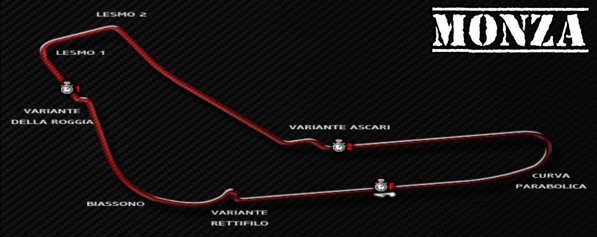

Circuitos
Listado de circuitos que forman parte del videojuego.
🏁 Circuito de Monza
- Ubicación: Monza, Italia.
- Inauguración: 1922.
- Longitud actual (circuito GP): ~5.793 km.
- Número de curvas: 11 (curvas rápidas y chicanas).
- Apodo: "El Templo de la Velocidad".
- Características:
- - Uno de los circuitos más rápidos del mundo.
- - Rectas largas y curvas de alta velocidad.
- - Variantes históricas como el óvalo con peraltes.
🏆 FIA GT Championship en Monza
Monza aparecio en la FIA GT Championship entre 1997 hasta el 2009 cuando fue el ultimo año de la categoria, Monza era una sede habitual en el calendario, destacándose por sus emocionantes carreras y gran velocidad.
Participación destacada:
- - Monza figuró regularmente desde finales de los 90 hasta 2009.
- - La carrera solía disputarse entre abril y mayo.
- - Popular por favorecer autos con gran velocidad punta.
Ediciones destacadas:
- 2004: Debut del Maserati MC12 GT1.
- 2007: Victoria de Vitaphone Racing Team con el Maserati MC12.
- 2009: Última carrera del FIA GT en Monza bajo el formato original.
📸 Momentos destacados y curiosidades
- - Batallas memorables entre AF Corse, Vitaphone Racing, BMS Scuderia Italia y otros.
- - Sonido inconfundible de los V12 y V10 en las largas rectas.
- - Requiere configuración aerodinámica de baja carga, lo que complica el paso por curvas técnicas.
游꿘 쮻칩nde ver más?
Si te interesa revivir estas carreras históricas, puedes encontrarlas en:
- YouTube: Busca FIA GT Monza 2007, Maserati MC12 Monza, etc.
- GT World Challenge: Sitio oficial (sucesor del FIA GT Championship).
- Revistas: Autosport, Motorsport Magazine y otras publicaciones especializadas.